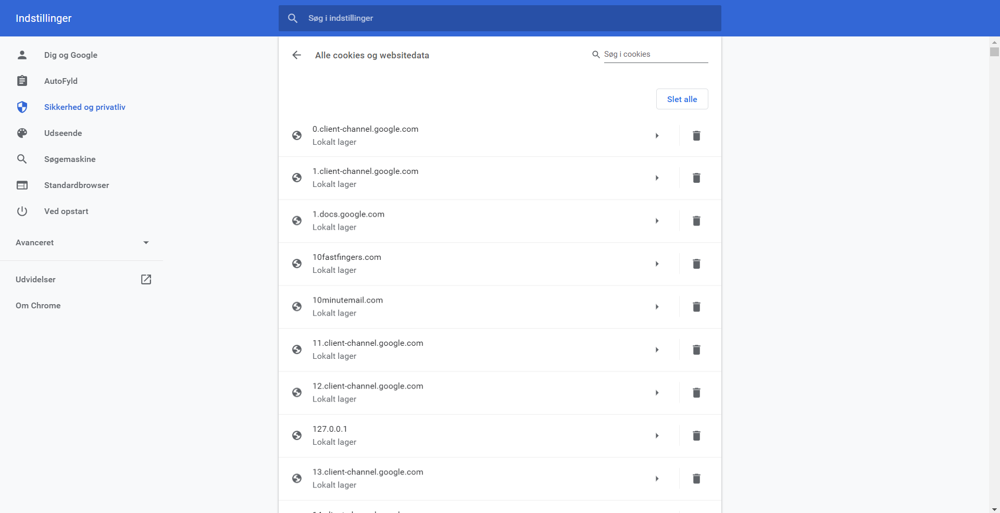

I dette forløb har vi lært om de data som logges omkring vores færden på nettet i det ligger bl.a. betydningen af cookies og hvordan vi kan se hvilke websider der har cookies/informationer om os (se billede). Udover data på nettet, så har forløbet også omhandlet den overvågning af privatpersoner der som f.eks. foregår i kina
